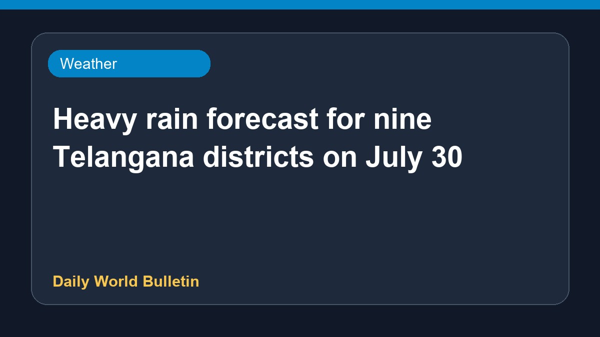

Heavy rain forecast for nine Telangana districts on July 30

Heavy to very heavy rainfall has been predicted for nine districts across Telangana for July 30, according to recent weather updates. Authorities and residents in the affected regions have been advised to stay alert as precipitation levels are expected to rise. Specific details regarding the exact rainfall measurements and the precise areas most at risk remain limited at this time. Local weather monitoring sources continue to track the developing weather system closely to provide timely updates to the public.
Original source: Weather News Sources
Heavy to very heavy rain forecast for nine Telangana districts for July 30 - The Hindu ↗
Heavy to very heavy rain forecast for nine Telangana districts for July 30 - The Hindu ↗